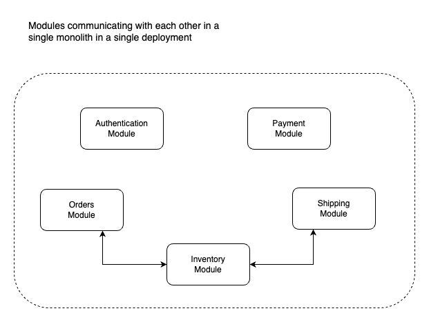
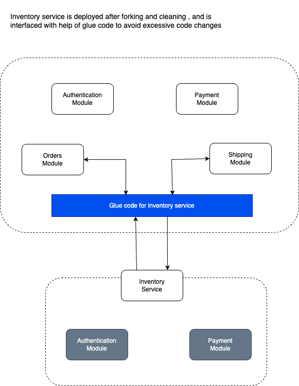
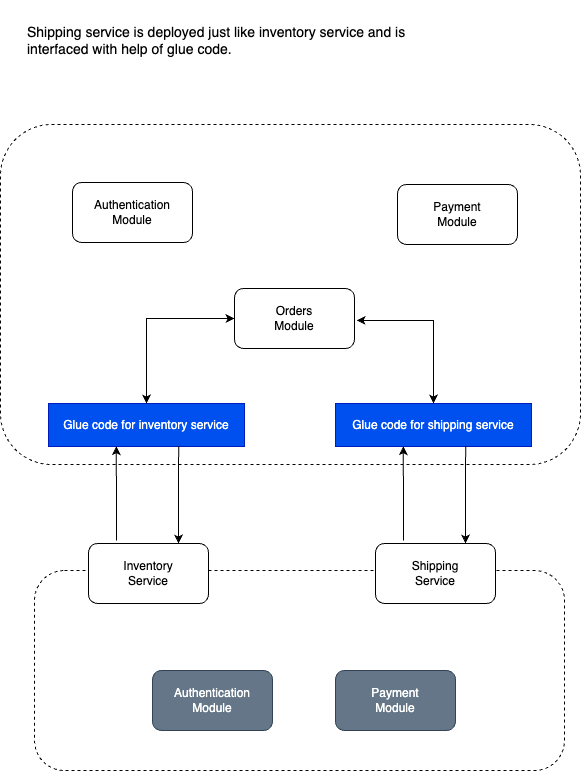

In the fast-paced world of software development, adaptability and scalability are key to staying competitive. If you’re working with a modular monolithic system, you might be feeling the strain of its limitations. But fear not, for there’s a strategy that can help you break free from the confines of your monolith while maintaining your sanity, tactical forking. In this article, we’ll explore how to use tactical forking to migrate from a modular monolith to a microservices architecture, in a way that’s both comprehensible and actionable.
Understanding the Problem
Before we dive into the nitty-gritty details of tactical forking, let’s take a moment to understand the challenges associated with modular monoliths and why microservices might be a better fit.
The Modular Monolith Predicament
Modular monoliths are designed to be organized into logical modules, making it easier to manage code. However, they can quickly become complex, difficult to scale, and inflexible. As your application grows, so does the complexity, making it challenging to maintain and deploy new features without affecting the entire system.
Microservices architecture offers a way out of this. By breaking down your monolith into smaller, independent services, you gain the ability to scale, update, and deploy parts of your application without disrupting the whole. But migrating an entire monolith to microservices can be daunting. That’s where tactical forking comes into play.
What is Tactical Forking?
Tactical forking is a structured approach to migration that involves creating a new version of your application, or “fork,” while maintaining the existing modular monolith. This fork serves as the foundation for building microservices incrementally, without the need for a massive rewrite. Point to note is that tactical forking works only with modular monolith.
How Does Tactical Forking Work?
Now that we’ve covered the why let’s delve into the how. Tactical forking involves a series of well-defined steps, each with its own set of technical details:
Identify and Decouple Modules
The first step in tactical forking is identifying and decoupling the modules within your monolith. This involves understanding the dependencies between modules and separating them as much as possible. Use code analysis tools to identify module boundaries, refactor code to minimise inter-module dependencies, and implement clear APIs for communication between modules.
Each module in future will be deployed a separate microservice which might have its own separate database. Hence, a good data modeling strategy is required to split the existing monolith database schema into different databases in as normalised form as possible.

Create a Fork
Once you’ve isolated modules, create a fork of your monolith. This fork will serve as the basis for your microservices migration. Set up a separate code repository for the fork, ensuring that the forked codebase can run independently and implementing version control to manage the forked codebase.
Gradual Microservices Implementation
Now comes the exciting part, introducing microservices to your forked application. Identify a module suitable for microservices migration, extract the module into a separate service, and implement necessary infrastructure like containerization and orchestration. Set up API gateways for communication between services. Now use something called a glue code to abstract the calls to this extracted service API in your monolith. This glue code will hide the migration from a module to module call to a API call.
Use the new data modelling strategy to split the data existing database into separate databases for each microservice as per requirement (it can be the most challenging task).

Testing and Monitoring
Thorough testing and monitoring are crucial to ensure the reliability and performance of your microservices. Implement automated testing for microservices, set up logging and monitoring solutions (e.g., ELK stack, Prometheus), and monitor performance and gather feedback.
Rinse and Repeat
Continue the process of modularizing and migrating modules one by one until you’ve achieved your desired microservices architecture. Iterate through last 2 steps for each module, regularly assess the overall system’s performance and reliability, and refine your microservices strategy based on feedback and lessons learned.

Benefits & Limitations
Benefits
- Risk Mitigation : You don’t have to put all your eggs in one basket. You can gradually migrate functionality, reducing the risk of disrupting your existing system.
- Continuous Delivery : You can start deploying microservices as soon as they’re ready, improving your development and release cycle.
- Testing Ground : The forked version acts as a playground for experimenting with microservices without affecting production.
Limitations
- Redundancy : You will end up having a lot of duplicated code implementation in the initial stages because migrating some parts of module completely might not be possible.
- Remodelling data strategy : You might need to remodel the data strategy completely so that data can survive the forking and splitting stage.
- Tedious knowledge transfer : Different teams should have thorough knowledge about the complete monolithic system before starting tactical forking so that they can operate on their fork separately.
- Performance Overhead : Overhead of containerization and service orchestration can impact the performance of system.
- Potential over-engineering : In some cases, you may be tempted to over-engineer the microservices architecture, adding unnecessary complexity
Conclusion
Tactical forking is a pragmatic approach to migrating from a modular monolith to a microservices architecture. By following these steps and paying attention to the technical details, you can gradually transform your monolithic system into a nimble and scalable microservices ecosystem.
“ Rome wasn’t built in a day, and neither is a microservices architecture. Take it one module at a time during tactical forking, and you’ll soon reap the benefits of a more flexible and scalable software system. “
Happy forking!